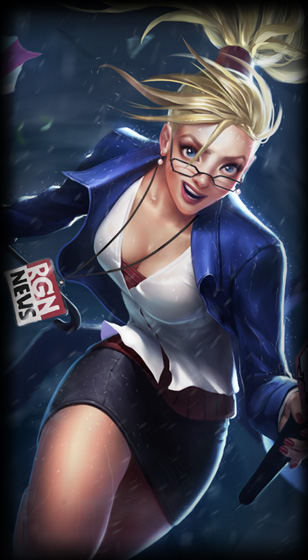
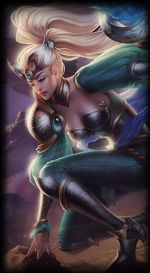
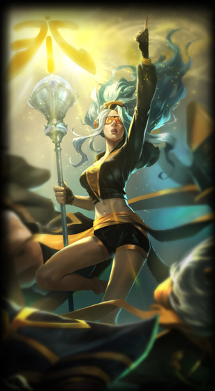

tristana
la artillera yordle
ciudad bandle
La grandeza viene a veces en frascos pequeños, como demuestra esta diminuta artillera yordle. En medio de un mundo hostil, Tristana no da la espalda a reto alguno y ha conseguido convertirse en un arquetipo de habilidad marcial, valor a toda prueba y desbordante optimismo. Para Trist y su fiel cañón, Boomer, cada misión es una oportunidad de demostrar que los héroes existen.



janna
la furia de la tormenta
independiente
Hay hechiceros que se entregan a los poderes primordiales de la naturaleza, renunciando a todo cuando hayan aprendido de la magia. Janna es una de esas hechiceras, que aprendió magia como huérfana cuando crecía en medio del caos de la ciudad estado de Zaun. Janna sobrevivía como podía en las calles. La vida era dura y peligrosa para una chica joven y bella, así que sobrevivía a base de ingenio y de robar cuando el ingenio no era suficiente. La magia desbocada que caracteriza a Zaun fue la primera herramienta, y la más atrayente, con la que Janna supo que podría protegerse y sobresalir. Janna descubrió que tenía afinidad con un tipo concreto de magia: la elemental del aire. Dominó sus estudios sobre la magia del aire en cuestión de meses, casi como si hubiera nacido para ello. Janna pasó de vagabunda callejera a avatar del aire prácticamente de la noche a la mañana, asombrando y superando a aquellos que la habían educado. Esa ascensión tan veloz también cambió su aspecto físico, dotándola de una apariencia de otro mundo.
Con el objetivo de acabar con la injusticia del mundo (en especial, la locura en que se convirtió la ciudad de Zaun), Janna llevó su talento a la Liga de Leyendas. Es una voz por la regulación de la experimentación mágica y apoya el desarrollo de la tecmaturgia. De este modo, se convierte en una aliada indirecta de la ciudad estado de Piltóver y de las brillantes mentes tecmatúrgicas que viven allí. Janna también es una nueva favorita de muchos aficionados de la Liga. A menudo es el centro de atención en funciones, días de aficionados y otros eventos conmemorativos. Sin embargo, hay algo intocable en Janna y sus sentimientos pueden cambiar tan rápidamente como el viento.
No te dejes hechizar por la belleza de Janna. Como el viento, le basta un soplo para provocar una tremenda destrucción.


shyvana
la hija del dragon
demacia
Una mestiza nacida de la unión entre un dragón y un humano, Shyvana ha buscado su lugar durante toda la vida. La persecución la ha convertido en una guerrera brutal, y aquellos que osan hacer frente a Shyvana se enfrentan a la feroz bestia que acecha bajo su piel.
Los dragones consideraron la sangre impura de Shyvana una abominación, y se pasó toda su infancia siendo perseguida sin descanso por un malvado dragón. Siempre huyendo, ella y su padre, un dragón marginado, nunca conocieron un hogar de verdad. Con el reflejo de brutales e incontables batallas, Shyvana creció entre odio y violencia. Después de años de lucha, su padre pereció ante el otro dragón, no sin antes herir gravemente al enemigo. Furiosa por la pena, Shyvana persiguió al asesino de su padre que voló al norte para recuperarse. Allí, ella se encontró con un grupo de humanos que buscaban al mismo dragón. A pesar de que los hombres la observaban con miedo, el líder se acercó a Shyvana tranquilamente. Se presentó como Jarvan IV, príncipe de Demacia, y le ofreció ayuda a Shyvana para su venganza. Juntos cazaron y se enfrentaron al cruel dragón que había asesinado a su padre. Shyvana no esperaba que los hombres sobrevivieran, sin embargo, en el fragor de la batalla, Jarvan y sus hombres pelearon con una fuerza que ella misma nunca hubiera creído que tuvieran los humanos. Los acorazados guerreros consiguieron someter al enemigo, y fue Shyvana la que le dio el golpe de gracia, arrancándole el corazón a la bestia. Inspirado por su ferocidad, Jarvan le ofreció un puesto en su guarda de élite. Shyvana aún podía ver el terror en los ojos de los hombres, pero añoraba un verdadero hogar. Confió en la palabra de Jarvan y aceptó la oferta, sirviendo así como una guerrera demaciana. Aunque los aliados humanos admiran su poder, mantienen la distancia. Shyvana lucha con el poder del dragón de su interior para pagar la amabilidad del príncipe, pero no evita preguntarse si los humanos hacen bien en temerla.
''He demostrado mi poder a los dragones, ¿qué desafío plantean los humanos?''
-- Shyvana


galio
a tristeza del guardián
demacia
Mucho antes de que se impusieran regulaciones en el uso de la magia, los magos experimentaban con la creación de vida artificial. Aunque ahora es algo prohibido, la inculcación de la razón a los gólems era una práctica relativamente habitual entre los artífices más expertos. Uno de estos visionarios era el demaciano Durand. Con una habilidad sin igual para crear seres conscientes, las obras de Durand servían de infatigables guardianes para las ciudades fronterizas de esta querida ciudad estado, protegiéndolas de sus vecinos noxianos. Sin embargo, Durand guardó para su propia defensa su obra maestra: Galio. Este ser poderoso, forjado a imagen y semejanza de una gárgola, lo mantenía a salvo en sus viajes y le permitía llevar a cabo su importante trabajo sin temor a sufrir las represalias de los enemigos de su tierra... Hasta que el enfrentamiento con sus duros guardianes terminó por provocar la ira del Alto Mando noxiano.
Cuando Durand cruzó el Pantano de los Lamentos arrastrando su obra maestra, fue atacado por un amplio grupo de asesinos noxianos. En un evidente estado de inferioridad física y numérica, Galio hubo de presenciar con horror cómo los asesinos ejecutaban rápidamente a su amo, antes de desvanecerse entre la niebla. Despojado de su razón para vivir, cayó en la desesperación. Durante años permaneció solo, velando los huesos del maestro al que no había sabido proteger... un monumento literal a su propia eterna vergüenza.
Hasta que un día, una triste pero decidida Yordle con una poderosa corona demaciana se detuvo a descansar bajo la sombra de la gran estatua. Oculto a los ojos de su visitante, ajena a su presencia, Galio estudió a la melancólica muchacha. Parecía como si ella también soportara una pesada carga. Tan silenciosa y estoicamente como había llegado, la chica se fue en dirección a Demacia. Este encuentro encendió una chispa en la mirada de Galio. Recordando la causa cuya defensa le había costado la vida a su maestro, Galio salió de su purgatorio de silencio y siguió la estela de esta valiente criatura. Por fin había encontrado una nueva razón para vivir: luchar por la voluntad de Demacia.


tryndamere
el rey bárbaro
fréljord
tryndamere avanza por la tundra empujado por su furia y rabia desatadas, domina el arte de la batalla y desafía a los más poderosos guerreros del Fréljord. Este bárbaro iracundo busca vengarse de quien diezmó a su clan, y acaba con todo aquel que se interponga entre él y su retribución final.
El joven Tryndamere intentaba sobrevivir en el duro y helador Fréljord, y su gente combatía contra otras tribus por los escasos recursos que daba la tierra. En una de estas peleas, su vida cambió para siempre. Los incursores tendieron una emboscada a Tryndamere en el silencio de la noche, y aunque los guerreros pudieron repeler la primera oleada, no estaban listos para la figura oscura que apareció después. Blandía una espada cruel y viviente, e inspiraba ansias de sangre en los invasores con su magia de otro mundo. La tribu de Tryndamere fue superada en un momento. Después de perder la esperanza de derrotar a ese ser enigmático, Tryndamere se lanzó a una muerte segura. La figura oscura lo apartó a un lado e hirió mortalmente al joven bárbaro.
Tryndamere veía cómo la muerte y la destrucción se cebaban con su hogar al tiempo que veía cómo la vida se le escapaba de las manos. Nadie aguantó, sólo quedaban los gritos de los moribundos. Tryndamere era incapaz de rendirse y se entregó del todo a su ira. Su sangre hervía y la rabia lo consumía, lo que disipaba su mortalidad. Se puso de pie, casi incapaz de sostener la espada, preparándose para el enfrentamiento final con ese ser sombrío. Pero la figura oscura ni siquiera alzó la espada, en vez de eso, sonrió familiarmente a Tryndamere mientras se desvanecía en las sombras. Fue la última vez que el bárbaro vio a su némesis.
Tryndamere, un hombre al que habían arrebatado su hogar y a su gente, merodeó por el Fréljord durante años, y juró convertirse en un instrumento de venganza brutal. Visitó todas las tribus de los páramos helados, y superó a todos sus campeones, hasta que no quedó ninguno al que desafiar. Durante este tiempo, dominó las artes bárbaras y convirtió su rabia en una fuerza a tener en cuenta. Espada en mano e ira en el corazón, está inmerso en una misión de venganza contra aquellos que destrozaron la vida que una vez conoció.
''La ira es mi arma''.
-- Tryndamere